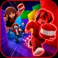
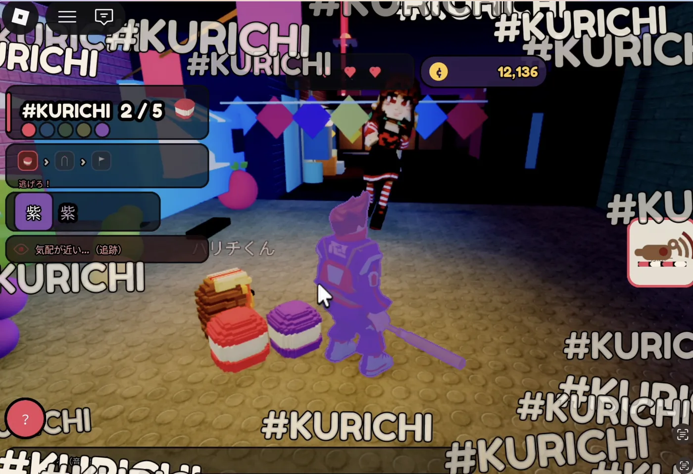
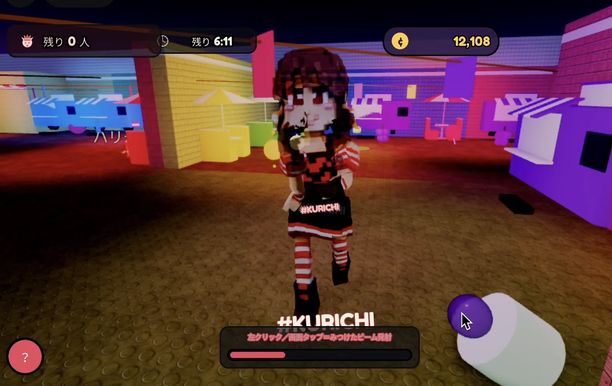

🎮 ROBLOX
Kurichi Thief
潜入只在夜里醒来的点心之城「Kurichiland」！
你是甜食小偷——集齐五种「口味」，从发光的拱门逃出去！

在 Roblox 上游玩 →
🍭 关于游戏
这是一款什么游戏？

尝一口「口味」，身体就会染上那个颜色。变成同色的水果和点心，躲开巨大的 Kurichi-chan。就算被抓住，同伴碰一下就能复活。一个人也能玩，多人更有趣的合作游戏。
5 种
口味
8 分钟
每局
最多 8 人
同时游玩
📋 玩法
怎么玩
1
找到并尝遍五种「口味」
2
变成同色的点心，躲过 Kurichi-chan
3
被抓住就会当场定住——同伴碰一下即可复活
4
集齐五色，从发光的拱门逃脱
🎬 实机演示
游戏画面
🎨 五种口味
五种「口味」
草莓
蓝莓
抹茶
香蕉
葡萄
👹 鬼
鬼：Kurichi-chan

追着你跑的，是巨大的 Kurichi-chan。她用光束照亮四周，搜寻乔装的小偷。一动不动的话，说不定就不会被发现。
给家长
游戏中没有疼痛或恐怖的表现。就算被抓住，同伴也会来帮忙——这是一款重视合作的游戏。